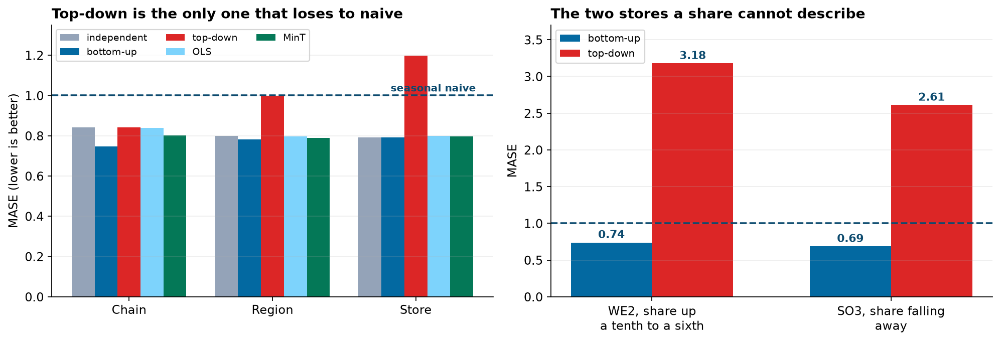

- Setting
- A retail chain of sixteen stores in four regions, with seven years of monthly units at the till. The hierarchy is exact: region totals are the sum of their stores, the chain total is the sum of the regions, and nothing above a store is estimated.
- The question
- What is the plan for next year, at store level, at region level and for the board, when the three sets of numbers have to agree with each other?
- Why it matters
- Store managers, regional managers and the board are each held to their own figure. If the parts do not sum to the total then somebody is being measured against a number the plan does not contain.
- What we do
- Forecast every level independently and measure the disagreement, then compare bottom-up, top-down and two reconciliation methods on a five-origin backtest, scored by level and by store.
Twenty-one series, one arithmetic constraint, and four ways of satisfying it. The disagreement between the independent forecasts turns out to be under one percent, which is exactly what makes this a hard problem to take seriously and an easy one to get wrong.
The Three Numbers That Do Not Agree
Each team forecasts what it is responsible for. Holt-Winters on the chain series for the board, on each region for the regional managers, on each store for the store managers. Six years of history, twelve months ahead, twenty-one separate fits. Then somebody adds them up.
Ten thousand nine hundred and twenty-four units separate the highest from the lowest. On a chain doing 1.3 million a year that is under one percent, and there is no error anywhere to find. Each of the three numbers is a competent forecast of the series it was fitted to. They disagree because nothing in the procedure ever asked them to agree, and three separate fits to three different series have no reason to.
A plan is a set of commitments. If the four regional targets sum to eleven thousand units less than the figure the board approved, then either a region is carrying a target nobody accounted for or the board's number is unfunded. The number in the gap does not have to be large to make the plan unusable. Coherence is a property the output either has or does not have.
Meet the Chain
Sixteen stores, four regions, eighty-four months from January 2019 to December 2025. The export arrived with August 2022 run twice, one store's region spelled three ways, a stocktake booked as minus 412 units and two months where the till export wrote a zero. Those last three are repaired by interpolating within each store's own series, because a till failure read as a month of no sales drags that store's trend down for the rest of the history.
![Four panels. Top left: the chain's monthly units over seven years, strongly seasonal with December peaks rising from about 125,000 to 145,000. Top right: all sixteen stores indexed to their own first year, with WE2 climbing to nearly four times its starting level and SO3 falling to about half, while the other fourteen stay near one. Bottom left: the seasonal shape, December 35 percent above the average month and February 16 percent below. Bottom right: standard deviation of the year-on-year change, 17.6 percent for a store, 9.5 percent for a region and 5.6 percent for the chain, with a dashed line at 4.4 percent marking what sixteen independent stores would give.](../assets/img/capstone-hier-firstlook.png)
Two stores are worth naming now, because they decide the outcome. WE2 grows at 18.3 percent a year while the rest of the West edges down at 0.8. SO3 falls at 13.3 percent while the rest of the South grows at 6.1. Neither is anomalous as a business. Both are impossible to express as a fixed share of a national number.
Bottom-Up, and What It Costs at the Top
Forecast the sixteen stores and add them up. Coherent by construction, since every level is now a sum of the same sixteen numbers, and it keeps each store's own history including the two that are going their own way. The chain fit is simply discarded.
The objection to bottom-up is that the chain forecast becomes an accumulation of sixteen individual errors. Whether that matters depends entirely on whether those errors cancel, which is the question the bottom-right panel above was answering. Here they largely do, and that is not a general fact about retail chains. It is a fact about this one, and it is measurable.
Top-Down, and the Two Stores It Cannot See
Forecast the chain, which is the smoothest series in the file, then split it down by each store's historical share. Also coherent, and it is the method that fails hardest here. The failure is not a matter of degree.
| Store | Share of the chain, six-year average | Share last year | Top-down plan | Against last year |
|---|---|---|---|---|
| WE2 | 10.1% | 15.8% | 128,722 | −37.1% |
| SO3 | 4.5% | 2.5% | 57,251 | +79.2% |
A share is a constant and these two stores are not. WE2 has climbed from a tenth of the chain to a sixth while SO3 has fallen away, and a six-year average splits the difference on both. The plan cuts a growing store by more than a third and hands a shrinking one an increase of nearly eighty percent. Neither number could survive a conversation with the store manager.
The other fourteen stores are well enough behaved that the method still looks defensible in aggregate, which is exactly how it survives in practice. Nobody checks the two stores that the average is wrong about, because the chain total it produces is the best-forecast series in the building.
Reconciliation as a Projection
Both methods so far throw information away. Bottom-up ignores the chain fit; top-down ignores the store fits. Reconciliation keeps all twenty-one forecasts and looks for the coherent set closest to them, which is a projection and therefore a single line of linear algebra once the structure is written as a matrix.
| Method | What it assumes | Moves the original forecasts by |
|---|---|---|
| Bottom-up | Only the store forecasts are worth keeping | 103 units per series-month |
| Top-down | Only the chain forecast is worth keeping, and shares are stable | 1,266 units per series-month |
| OLS reconciliation | Every one of the twenty-one is equally reliable | 95 units per series-month |
| MinT | Weight them by their error sizes and by how those errors move together | 93 units per series-month |
The last column is the honest summary of what reconciliation does. It is a nudge, not a rebuild. MinT moves the original forecasts least of the four, because it is looking for the nearest coherent set rather than imposing a structure on the answer. Top-down moves them by more than twelve times as much, which is another way of stating what the previous section showed.
The difference between OLS and MinT is the covariance. OLS treats a store doing 2,700 units a month and the chain doing 108,000 as equally informative. MinT uses the in-sample errors to work out which forecasts have been reliable and which errors tend to move together, and weights accordingly. That is the only thing separating them, and it shows up in every row of the backtest.
The Backtest
Five origins, twelve months ahead from each, every method refitted at every origin. Scored with MASE, which divides by the seasonal naive error on that series' own training data, so a store doing four thousand units a month and a chain doing a hundred thousand can appear in the same table. Below 1 beats a seasonal naive rule.
| Level | Independent | Bottom-up | Top-down | OLS | MinT |
|---|---|---|---|---|---|
| Chain | 0.840 | 0.747 | 0.840 | 0.839 | 0.802 |
| Region | 0.799 | 0.782 | 0.999 | 0.796 | 0.788 |
| Store | 0.792 | 0.792 | 1.198 | 0.798 | 0.796 |
Read the top-down column first. It is the only one that ever loses to a seasonal naive rule, and at store level it is half again as bad as everything else. For an individual store you would have done better assuming next December equals last December than using a plan built by splitting the national number down.
Then read across the other four. They are close. Bottom-up is the best coherent choice at every level, MinT is a step behind it, and OLS trails MinT in every row, which is the argument for using the error covariance rather than assuming it away.

The worst five series under top-down are WE2 at 4.3 times the bottom-up error, SO3 at 3.8, SO4 at 2.3, and then the West region and WE1. Every one of them is a place where a share has been drifting. This is what it looks like when a diagnostic run before any modeling tells you exactly where the model will fail.
Which Number to Plan On
Bottom-up won, and that could not have been known in advance. It won because these sixteen stores are individually forecastable and their errors largely cancel, which is the fact the first look measured and the backtest confirmed. On a chain of two hundred small stores, or on weekly data where each store is far noisier, the same procedure routinely goes the other way and the aggregate forecast carries the day.
That is the case for reconciliation and it is a modest one. MinT was never the best method at any level here and never more than 0.055 MASE behind the one that was, while requiring no judgment about which level to trust. It is insurance rather than an improvement, and it is cheap. What the backtest does establish beyond argument is which method not to use.
What This Does Not Settle
Coherence is not accuracy. Every method after the first produces numbers that add up, including the worst one in the table. Adding up is a property of the output and says nothing about whether the output is any good.
The winner is a property of this chain. Sixteen stores, monthly, with errors that mostly cancel. Change any of those and the ranking can invert, which is why the backtest is the deliverable and not the model.
One structure, one moment. The hierarchy here is geographic and fixed. Real chains open and close stores, move them between regions, and sell through channels that cut across geography, so a store can belong to two groupings at once. Reconciling across several groupings at the same time is a harder problem than the one worked here.
Nothing above produced an interval. Every number in this chapter is a point, and a plan is built on a range. The interval around a reconciled forecast is not the interval around the base forecasts, because the projection mixes them, and its coverage has to be measured rather than assumed. That is the subject of the last capstone in this part.
What to Watch
- ✓Add the levels up before anyone presents them. Independent forecasts have no reason to agree, and the gap is usually small enough to go unnoticed until three teams are holding three different targets.
- ✓Plot each unit's share of its parent over time before anyone proposes top-down. A share that is trending cannot be averaged, and the stores where it is trending are exactly the ones a planner will be asked about.
- ✓Test whether bottom-up will work before you rely on it. Difference out the season, compare the aggregate's variation against what independent series would give, and see how close they are.
- ✓Score by level, not overall. A method can win at the top and lose at the bottom, and only one of those is the number a store manager is held to.
- ✓If you reconcile at all, use the error covariance. MinT and OLS are the same projection with one difference, and it decided every row of the backtest.
- ✓Re-run the comparison when the portfolio changes. The ranking rests on how far store errors cancel, and that moves when stores open, close or change size.
Hierarchical Forecasting in Data Science & AI
Almost every forecast that reaches a decision is part of a hierarchy. Demand by product rolls into category and into total; capacity by machine rolls into line and plant; traffic by page rolls into section and site. The constraint is arithmetic and unavoidable, and most production forecasting stacks handle it badly or not at all.
| Where it shows up | The hierarchy | What goes wrong without reconciliation |
|---|---|---|
| Retail demand planning | Item, store, region, chain | Buyers order against one number and stores are held to another |
| Cloud capacity | Instance, service, region, fleet | Regional headroom sums to more or less than the fleet budget |
| Energy load | Substation, feeder, grid | Local forecasts that do not sum to the dispatch plan |
| Financial planning | Team, department, division, company | Approved budgets that do not add to the approved total |
Hyndman and colleagues introduced optimal reconciliation as a regression problem in 2011, and Wickramasuriya, Athanasopoulos and Hyndman derived MinT in 2019 by minimizing the trace of the reconciled error covariance, which is where the name comes from. The practical difficulty is estimating that covariance: with twenty-one series and seventy-two months there are more parameters than observations, so the estimate is shrunk toward its diagonal, as it is here. The M5 competition in 2020 was hierarchical by design, on Walmart sales across items, stores and states, and it remains the largest public test of whether these methods earn their place.
The full project, step by step
The companion notebook cleans the export, measures the chain from underneath, writes the hierarchy as a summing matrix, fits all twenty-one series and quantifies the disagreement, builds bottom-up, top-down, OLS and MinT reconciliations, and scores every one of them on a five-origin backtest by level and by store.
The dataset
(capstone-hierarchical-forecasting.xlsx) holds seven years of monthly units for sixteen stores
in four regions, 1,344 rows once the duplicated extract is removed, together with the store and region
labels the hierarchy is built from and the messy layer the export arrived with. Two written reports
accompany it: a plain-language brief for the chief operating officer, and a
technical report covering the coherence deficit, the four reconciliation methods and the
rolling-origin backtest.
🎓 Key Takeaways
- ✓Twenty-one independent forecasts disagreed by 10,924 units, 0.85 percent of the chain, and none of the three sets could be issued as a plan.
- ✓Top-down was the only method ever beaten by a seasonal naive rule, at 1.198 MASE across the sixteen stores.
- ✓WE2 went from a tenth of the chain to a sixth and SO3 more than halved, so a six-year average share cut one store by 37 percent and raised the other by 79.
- ✓Bottom-up won at all three levels, 0.747 at the chain, 0.782 at region and 0.792 at store, because store errors largely cancel: 5.6 percent against the 4.4 that independence implies.
- ✓MinT was never the best and never more than 0.055 behind, and beat OLS in every row. Insurance rather than an improvement, and cheap.